Pills are items that can be dropped once Pac-man eats enough ghosts, giving Pac-man a temporary power-up in relation to each ghost. The criteria for which pill you receive is rather complex, but it breaks down to how many points you rack up from eating ghosts. The more the ghost is worth, the higher chance you get their pill. Pills also have a cool down of about 20 seconds. meaning that even if you get a ghost sweep during that cooldown, you won't get a pill.
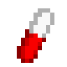
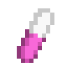
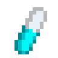
The Blue Pill creates a mirror clone of Pac-man akin to powered-up Inky's ability, your mirror clone will go the opposite direction you go for several seconds, eating everything pac-man can while also being invincible. A very useful item that makes quick work of eating pellets.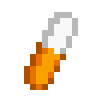
The Orange Pill allows Pac-man to eat larger sized pellets without the slowdown effect that said pellets normally produce. A niche pill that can be useful in later levels where there are more thick pellets to deal with and faster ghosts at your back.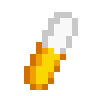
The Yellow Pill is almost worthless, giving you 100 points and queues a laugh from Kinky, stealing you out of a good item.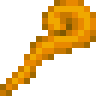
The Wand is a special item that works similar to a power-pellet, except instead of the ghost becoming blue, they turn into slow moving presents, each worth 1000 points. This item is useful for giving you a chance to breath and racking up points.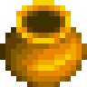
The Vase works exactly like the Pink pill, but exceedingly rare, sometimes you'll never see one in a single playthrough. But, just like the Pink pill, it's usefullness is paramount in trapping the ghosts in their house for a couple seconds.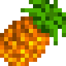
Worth 100 Points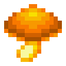
Worth 200 Points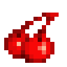
Worth 300 Points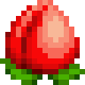
Worth 500 Points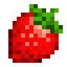
Worth 700 Points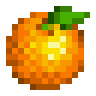
Worth 1000 Points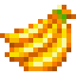
Worth 2000 Points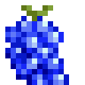
Worth 3000 Points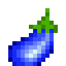
Worth 3000 Points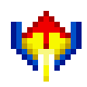
Worth 5000 Points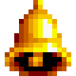
Worth 6000 Points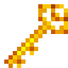
Worth 7000 Points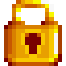
Worth 8000 Points